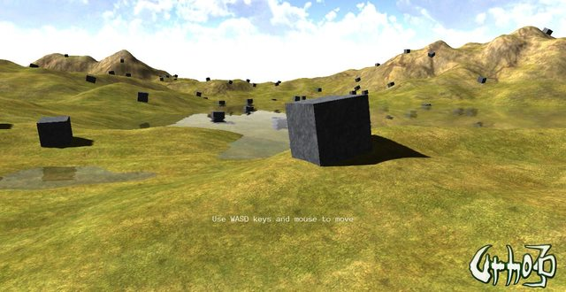
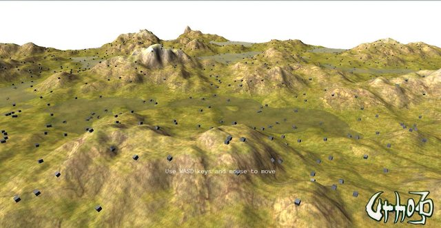
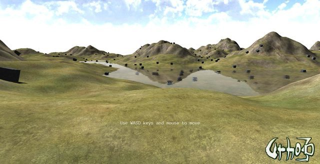
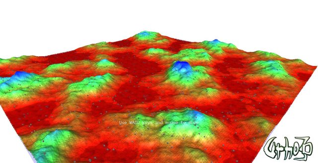

rasteron
Some small stuff here as I was just messing around with the default terrain, I got a bit of detail and color map added to improve the terrain visuals up close and from a distance. Still a work in progess with the height or elevation modified to shorten the process and generate a 2048x2048 color map.


Color and Detail map only

Terrain Weights texture as Color map for testing and aligning uv scale

Imgur Set


 As for other media like these replacement diffuse textures, it was a quick test so I have used L3DT to generate color maps out of its base textures and the modified heightmap. I have used the Temperate climate set on this setup and apparently the license prohibits redistribution of its base textures, so I’ll just find other alternatives that has either Public Domain or CC license when it is ready for PR or release.
As for other media like these replacement diffuse textures, it was a quick test so I have used L3DT to generate color maps out of its base textures and the modified heightmap. I have used the Temperate climate set on this setup and apparently the license prohibits redistribution of its base textures, so I’ll just find other alternatives that has either Public Domain or CC license when it is ready for PR or release.


 You can do this manually (send a large texture to the shader which contains multiple textures), or using the TextureArray feature.
You can do this manually (send a large texture to the shader which contains multiple textures), or using the TextureArray feature.
{kind=link}